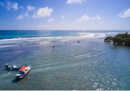
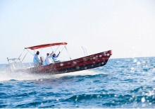
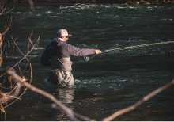
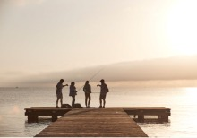

Question 1 of 9
Where will you be fishing?
Consider the type of water where you will spend most of your time. If you need help narrowing down your choices, think about what's closest to home.

Saltwater inshore
Fisheries located near to shore.

Saltwater offshore
Open water not near shore

Freshwater river
Freshwater stream/creek

Freshwater lakes/ponds
Also known as Stillwater
Next